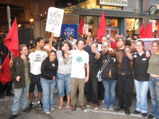

Submitted on Thu, 10/12/2006 - 5:22pm
 Headlines:
Headlines:
- Starbucks workers joining IWW in global fight for labor rights
- Making work safer with direct action
- N’west flight attendants strike barred - By Joshua DeVries
Featured Articles:
- IWW General Assembly launches organizing dept. Delegates from across Canada and U.S. discuss strategies for building union, solidarity.
- Workers’ safety requires a culture of solidarity Bosses’ insatiable demand for profit must be confronted to defend our lives and planet.
Also - more Starbucks organizing news.
Download a free PDF Copy of this issue.
Submitted on Thu, 10/12/2006 - 12:39am
Confederació Nacional del Treball Sindicat d'Oficis Varis de Barcelona Pl. Duc de Medinacelli 6, Entresol 1ª 08002 BARCELONA Tf/
Fax: 933 170 547
premsa@barcelona.cnt.es http://barcelona.cnt.es
Laboral / Economía Barcelona 29/09/2006
 Huelga Mercadona Brutal paliza a un miembro del Comité de Huelga de Mercadona Mañana se manifiestan a las seis de la tarde en Barcelona "Esto por Mercadona" le espetaban los cinco desconocidos que abordaron anoche en la calle a J.C., afiliado de CNT y miembro del Comité de huelga de Mercadona, mientras le propinaban puñetazos y patadas hasta dejarlo inconsciente en un charco de sangre. Tuvo que ser recogido por una ambulancia y posteriormente atendido en la Cruz Roja de traumatismo craneal, contusiones y puntos de sutura en diferentes partes del cuerpo.
Huelga Mercadona Brutal paliza a un miembro del Comité de Huelga de Mercadona Mañana se manifiestan a las seis de la tarde en Barcelona "Esto por Mercadona" le espetaban los cinco desconocidos que abordaron anoche en la calle a J.C., afiliado de CNT y miembro del Comité de huelga de Mercadona, mientras le propinaban puñetazos y patadas hasta dejarlo inconsciente en un charco de sangre. Tuvo que ser recogido por una ambulancia y posteriormente atendido en la Cruz Roja de traumatismo craneal, contusiones y puntos de sutura en diferentes partes del cuerpo.
Submitted on Fri, 10/06/2006 - 7:07pm
 To: Howard Schultz, Starbucks Chairman
To: Howard Schultz, Starbucks Chairman
We support the IWW Starbucks Workers Union and we have organized our law office and other colleagues in downtown Brooklyn to boycott the Starbucks across the street. We used to spend a lot of money there daily, but not anymore. Cease and desist from your anti-union policies and reinstate Daniel Gross now.
Marie A. Tatro, Esq.
Member UAW Local 2320, NOLSW, Legal Services Staff Association
Brooklyn, NY
Submitted on Thu, 10/05/2006 - 2:47pm
Disclaimer - The following article is reposted here because it is an issue with some relevance to the IWW. The views of the author do not necessarily agree with those of the IWW and vice versa.
By Meredith Schafer and Chris Kutalik - Monthly Review, October 5, 2006
 Millions of dollars worth of goods sat unmoved on the docks of the United States' largest port, Los Angeles/Long Beach, as port truckers, mostly Latino immigrants, struck on May 1. Despite being organized only informally in small networks, the truckers were able to use their position at a vital point in the economy to multiply their power.
Millions of dollars worth of goods sat unmoved on the docks of the United States' largest port, Los Angeles/Long Beach, as port truckers, mostly Latino immigrants, struck on May 1. Despite being organized only informally in small networks, the truckers were able to use their position at a vital point in the economy to multiply their power.
Submitted on Thu, 10/05/2006 - 3:17am
By Mischa Gaus - In These Times, October 4, 2006
When Joe Tessone and his fellow Starbucks baristas walked into a pep rally with management at their store in Chicago’s Logan Square neighborhood in August, the bosses were ready.
A trio of higher-ups passed around copies of the preamble to the constitution of the Industrial Workers of the World and warned the hourlies against the radicalism of the old anarchist-socialist One Big Union.
The managers told the “partners”—the company’s sobriquet for a workforce that baristas say is entirely part-time—that the CEO and chairman carry the same benefits package as the baristas.